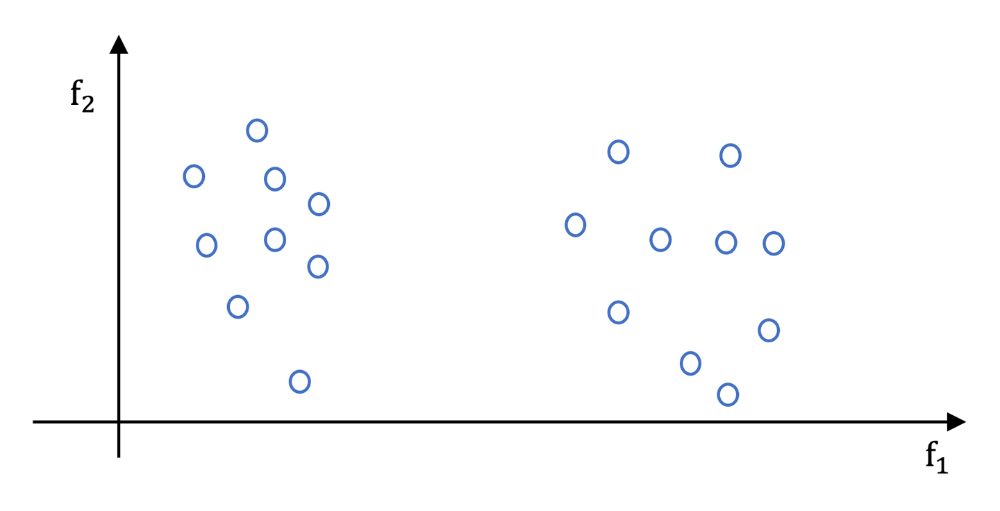
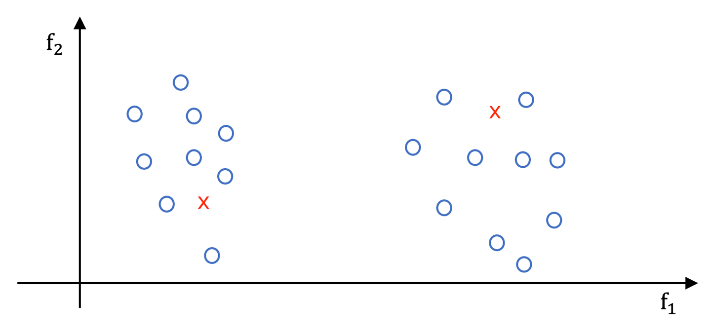
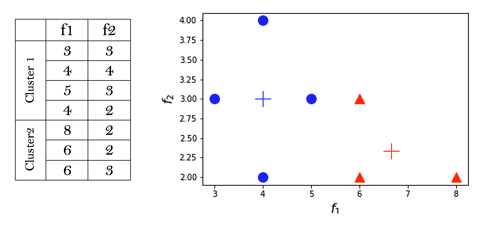
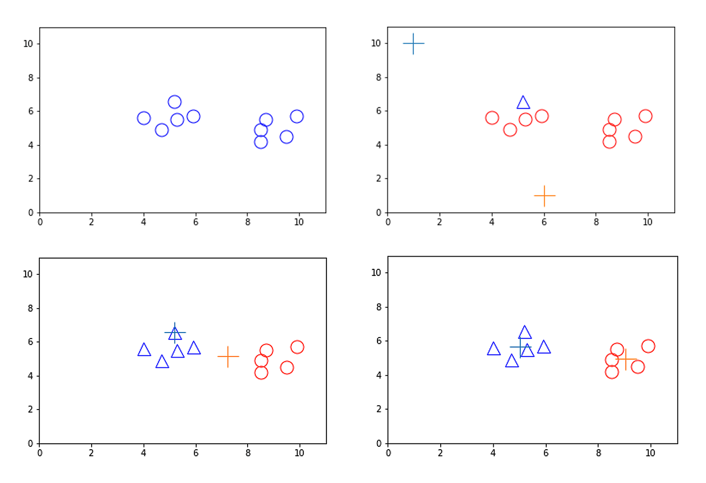

Two clusters case
Let us assume that we pre-specified a number of clusters. The simplest case is two clusters, i.e. a binary clustering problem.
We start with a feature space that has two attributes \(f1\) and \(f2\). Visualising the dataset looks like figure 3.2 below. It is obvious to our eyes that there are two distinctive groups in this dataset. Note that we have given them all the same colours because our dataset will not tell us the labels: there are no labels. We want to build a technique that can automatically tell us what could be reasonable clusters for the dataset. Bear in mind that we need the technique to be generalisable to higher dimensional space. The 2d space is always convenient because we can easily discern the groups (clusters), but when we move to higher dimensional space, like a 10d input space, then it is not that easy for the human eye to recognise the clusters.

Distance metrics
One obvious metric that we can use in order to inspect how close a pair of two data points are to each other is the Euclidian distance. The smaller the distance is, the closer or more similar to each other the two data points are. On the other hand, the further the distance between a pair of data points is, the less similar or close the data points are. The Euclidian distance via Pythagoras theorem for a 2-dimensional space is given as usual by:
Where we represented attribute 1 with sub index 1 and attribute 2 with sub index 2, note that we need to compare between each pair of points, so it is an intensive comparison that we will need to conduct on the entire dataset. OK, now once we have compared all pairs of our dataset (as we said earlier there is no training and testing sets because there are no labels), we need to decide on the centres of our clusters. Note that we have already decided that we have two clusters. Later on, we will see how we can vary the number of clusters.
Calculating the centroids

Start by assuming that we have two centres that have been given to us, and we want to see how accurate those centres are (it might come to our mind that we should start by looking at the clusters and calculate their centres, but we will come to that in a moment). Figure 3.3 above shows an example of two centres – the red x for the two clusters. Visually, it is clear that both are not in the centres of their respective clusters, but how should we calculate the centres? Please be aware that in clustering terminology, we call the groups clusters, we call the centres centroids and we call the sum of squared errors of each cluster the inertia (from mechanics).
The key is to average out the attributes for each cluster of data points. This will be done as follows:
Cluster 1 – take all the data points in the cluster and average their first attributes \(f1\) to produce \(\bar{x}_{1}\) and their second attributes to produce \(\bar{x}_{2}\). Now these two constitutes the new centroid of cluster 1, \(\boldsymbol{c}_{1}=\left(\bar{x}_{1}, \bar{x}_{2}\right)\).
Cluster 2 – same as in cluster 1, produces \(\boldsymbol{c}_{2}=\left(\overline{\bar{x}}_{1}, \overline{\bar{x}}_{2}\right)\).
In general, calculating the centroid is a straightforward averaging of the data points inside the cluster.
Note
Throughout this lesson, we refer to:
- The centroids with a bold small letter such as \(\boldsymbol{c}_{i}\) or \(\boldsymbol{c}^{\prime}\). It is bold to recognise that, like any point from the input space, each centroid might consist of several components. Each component represents an attribute in the dataset. It is a small letter because it is a point not a set.
- The clusters are denoted as bold capital letters such as \(\boldsymbol{C}_{i}\). It is capital to recognise that it is a set, and it is bold to recognise that it constitutes several attributes.
- The number of data points inside the cluster set \(\boldsymbol{C}_{i}\) is denoted as \(\left|\boldsymbol{C}_{i}\right|\) or as \(N_{i}\) (capital not bold). The two bars are used to denote the count of a set as we saw earlier in unit 1.
- The set of centroids are denoted as \(\boldsymbol{C} \boldsymbol{t}=\left\{\boldsymbol{c}_{i}\right\}, i=1, \ldots, K\).
So for example, if we have the following clusters as in figure 3.4 below:

Note that the centroids do not necessarily belong to the dataset, although they live in the same space. In fact, they will start as one of the data points in the dataset and then they move around with repetitive updates in the input space. You can think of the centroids as virtual data points or Omni-data points that are floating on the input space of the dataset.
OK, so now we know how to calculate the centres. What is next?
Assigning the data points to the clusters
We need now to know how to assign the data points to a cluster. To do so, we simply need to compare the distances of each data point in the dataset with each centroid that we have selected, and we assign the data point to the cluster with the shortest distance to its centroid.
Below in figure 3.5, we show how we start with a dataset without any clusters (or you can think of it as all data points belonging to the same cluster) with the blue circles on the top left image. Then we initialise two random centroids represented as +. We calculate the distance of each data point to these two centroids and compare to find out the minimum which specifies the membership to the cluster corresponding to the centroids (the centroid represents the cluster in that sense). On the top right-hand side, we see how one data point was assigned to the centroid on the top and the rest were assigned to the centroid on the bottom.

Based on this, we recalculate the centroid and on the bottom left you can see how both centroids were shifted one towards the right (top orange +) and one towards the left (bottom blue +), both gravitating toward the mass of the data. We then reassign the data point to the clusters and we can see that all points to the left become blue triangles and on the right become red circles. Finally, the bottom right image shows the final shift of the centroids to become exactly in the middle of both clusters. That’s great, this is what we wanted.
Distance measures
Note that there are a lot of measures other than the usual Euclidian distance that can be used in conjunction with a clustering algorithm to perform clustering. These include: Minkowski distance, Hamming distance, cosine similarity, Jaccard coefficient, correlation, mutual information. Some of these metrics are similarities and some of them are dissimilarities. Some will work for binary data only and some work for continuous attributes. Any similarity measure can be converted to a dissimilarity measure by inversing its fraction and/or by taking its complement. In general, the word distance or metrics is reserved to be in a mathematical sense, where a metric between two points is defined to have the following three relationships:
-
Positivity:
- \(d(\mathbf{x}, \mathbf{y}) \geq 0\) for any \(\mathbf{x}\) and \(\mathbf{y}\).
- \(d(\mathbf{x}, \mathbf{y})=0\) only if \(\mathbf{x}=\mathbf{y}\).
-
Symmetry: \(d(\mathbf{x}, \mathbf{y})=d(\mathbf{y}, \mathbf{x})\) for any \(\mathbf{x}\) and \(\mathbf{y}\)
-
Triangle inequality: \(d(\mathbf{x}, \mathbf{z}) \leq d(\mathbf{x}, \mathbf{y})+d(\mathbf{y}, \mathbf{z})\) for any \(\mathbf{x}, \boldsymbol{y}\) and \(\mathbf{z}\)
We state here a few of interest, but these are by no means an exhaustive list of them.
Jaccard coefficient
This is used when we have a binary only dataset (all attributes take either 0 or 1). In this case, we define:
where as you might have guessed:
\(f_{11}\) is the number of attributes where x is 1 and y is 1
\(f_{10}\) is the number of attributes where x is 1 and y is 0
\(f_{01}\) is the number of attributes where x is 0 and y is 1
\(f_{00}\) is the number of attributes where x is 0 and y is 0 (this is not used in \(Jacc\))
For example, if we have two records with the following attributes:
Cosine similarity
This is used mainly to measure the similarity between two documents. Each document is represented as a vector of the frequencies of a specific set of words from a dictionary. So vectors that represent documents are really long (thousands of attributes) all of which are the same size. Each component represents the number of times a corresponding word is stated in the document, regardless of where it is stated. This way we have a vector of natural numbers. To measure the similarity between two documents, we need to ignore the 0 because they are pervasive. The Jaccard may be a candidate but it does not take count, instead we use cosine similarity which is defined as follows:
This measures the cosine of the angle between x and y vectors. For example, if we have two vectors with the following attributes:
Extended Jaccard coefficient
This is an extension of Jaccard coefficient for documents data defined as follows:
You can refer to sections 2.4.1-2.4.6 of Tan et al (2019) for more details of other metrics.